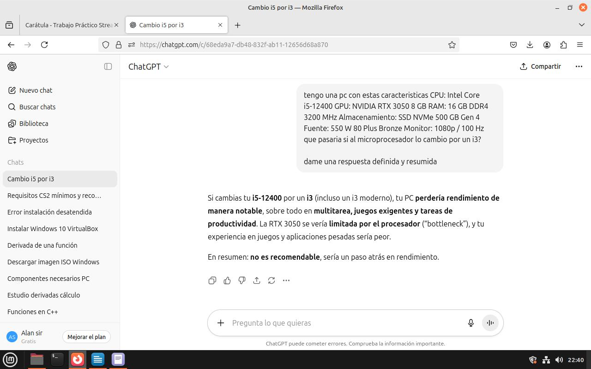

Imágenes del juego


Comparacion CS2 con Valorant
Counter-Strike 2 (CS2) y Valorant son shooters tácticos populares, pero presentan diferencias tanto en mecánicas de juego como en requisitos de hardware. CS2, desarrollado por Valve, se enfoca en puntería precisa, control de recoil, economía de equipo y uso estratégico de utilitarios, sin habilidades especiales por personaje; la ventaja depende de la destreza y coordinación pura. Valorant, de Riot Games, combina disparos con habilidades únicas de cada agente, lo que introduce estrategias adicionales de control de áreas y visión, facilitando la adaptación de jugadores menos experimentados. En cuanto a requisitos de PC, CS2 requiere un mínimo de 8 GB de RAM, procesador Intel Core i5-750 y tarjeta gráfica compatible con DirectX 11, mientras que Valorant funciona con solo 4 GB de RAM, procesador Intel Core i3-540 y GPU básica compatible con DirectX 11. Esto hace que Valorant sea más accesible para PCs modestas, mientras que CS2 demanda mayor capacidad de hardware para mantener un rendimiento óptimo, especialmente en resoluciones altas y con tasas de frames elevadas.
Justificaciones
Alan Sir
Configuración de PC para CS2
Basándome en los requerimientos recomendados y ajustándome al presupuesto disponible, armé esta propuesta de PC de escritorio pensada para que Counter-Strike 2 funcione con buena calidad gráfica, una tasa de FPS estable y una experiencia de juego fluida, incluso durante transmisiones en vivo.
Selección de componentes
-
Procesador: Intel Core i5-12400
Ofrece un excelente equilibrio entre potencia y eficiencia. Sus 6 núcleos y 12 hilos garantizan un rendimiento sólido tanto en el juego como al transmitir. -
Refrigeración: Cooler Evolabs Cryo Pro 4H
Mantiene el procesador con buena temperatura, evitando sobrecalentamiento durante partidas largas. -
Placa madre: Gigabyte H610M K DDR4
Asegura compatibilidad y estabilidad con los procesadores Intel de 12ª generación, además de soportar memorias DDR4 de alto rendimiento. -
Memoria RAM: 16 GB DDR4 3200 MHz
Aporta fluidez al sistema y evita caídas de rendimiento, permitiendo jugar y realizar otras tareas sin interrupciones. -
Almacenamiento: SSD Kingston NVMe 500 GB
Mejora notablemente los tiempos de carga del juego y del sistema operativo, ofreciendo una experiencia ágil y rápida. -
Tarjeta gráfica: NVIDIA RTX 3050 8 GB
Brinda una excelente calidad visual y FPS estables en CS2, ideal para jugar con buena resolución y fluidez. -
Fuente de poder: 550 W 80+ Bronze
Proporciona energía estable y eficiente para todos los componentes del equipo. -
Gabinete: Sentey H10
Buen flujo de aire, espacio suficiente para los componentes y un diseño moderno. -
Sistema operativo: Windows 11
Optimizado para juegos actuales y compatible con las últimas tecnologías gráficas. -
Periféricos:
- Mouse QBox M993: Preciso y cómodo, ideal para juegos de disparos.
- Teclado Raptor Fireclaw M1: Resistente y con buena respuesta para partidas intensas.
- Auriculares QBox H039: Sonido envolvente que mejora la percepción en el juego.
- Monitor Samsung 22” 100 Hz: Imagen fluida y nítida, perfecta para títulos competitivos.
Rendimiento estimado en CS2
- FPS aproximados: Entre 120 y 160 FPS en resolución 1080p con gráficos altos.
- Calidad y resolución de transmisión: Transmisión fluida en 1080p a 60 FPS o en 720p a 60 FPS si se prioriza estabilidad en streaming.
Estos valores son estimativos y pueden variar según la versión del juego, los drivers y la configuración de grabación o transmisión utilizada.
En conjunto, esta configuración busca ofrecer un equilibrio entre rendimiento, estabilidad y precio, asegurando una experiencia de juego competitiva y fluida en CS2.
Interaccion con IA
Le pregunté a la IA si cambiar el microprocesador de un Intel Core i5 a un i3 tendría un impacto significativo en el rendimiento de los juegos. La respuesta fue clara: sí. Esto se debe a que al pasar a un procesador más antiguo y de menor capacidad, se reduce el número de núcleos e hilos, se pierde compatibilidad con ciertas tecnologías más recientes y, en general, se limita el rendimiento del sistema. Estoy completamente de acuerdo, ya que no esperaba que la disminución en el rendimiento fuera tan notable; juegos modernos y aplicaciones exigentes se ven directamente afectados por esta diferencia de potencia entre procesadores.
Fuente del presupuesto:
Los precios y componentes fueron seleccionados y estimados a partir de la siguiente página web: https://www.xt-pc.com.ar